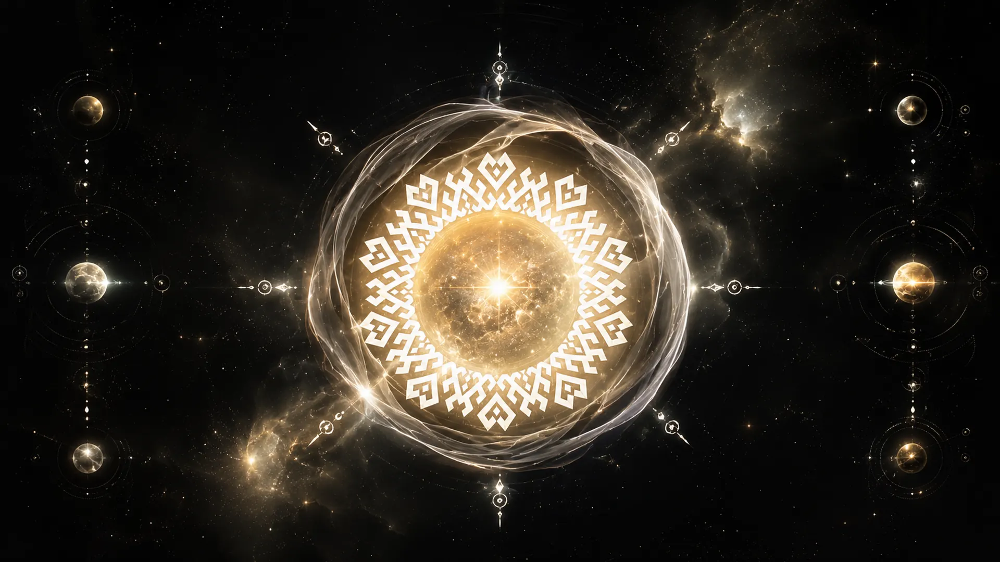
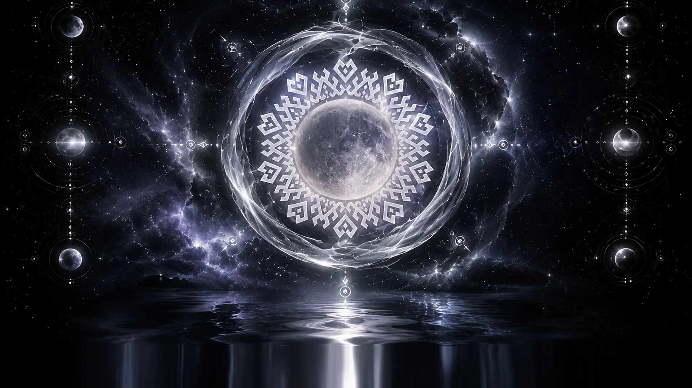
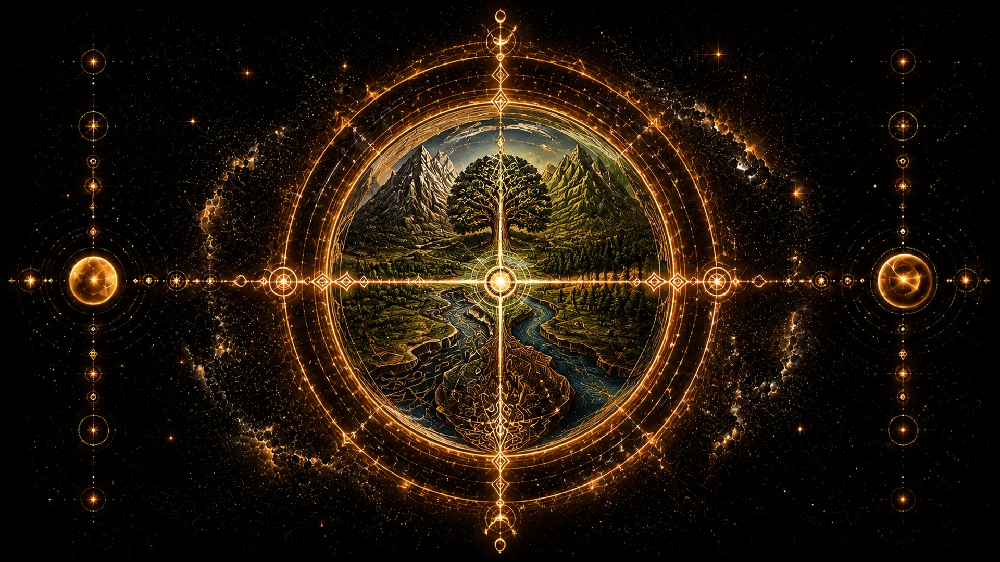
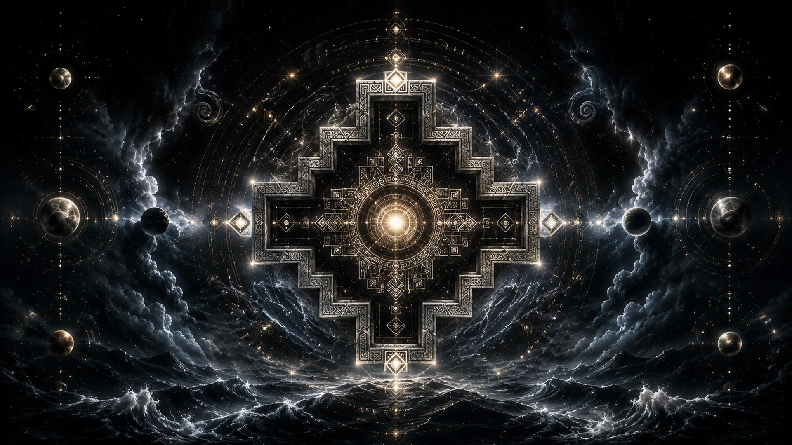
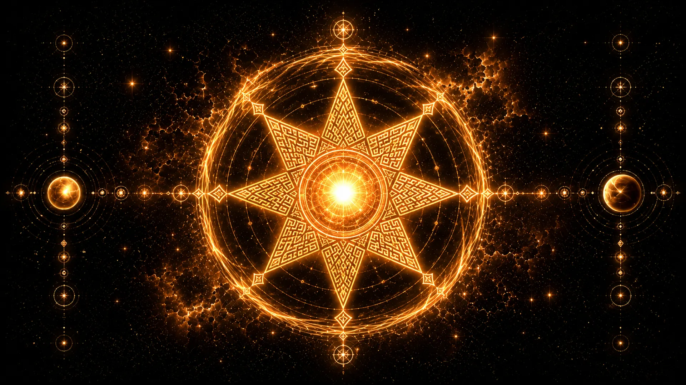
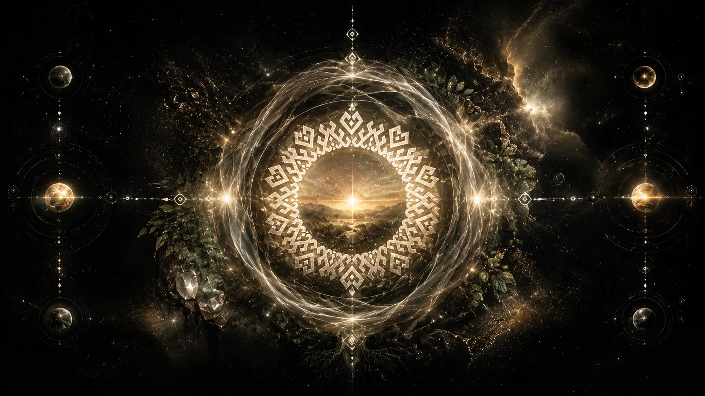
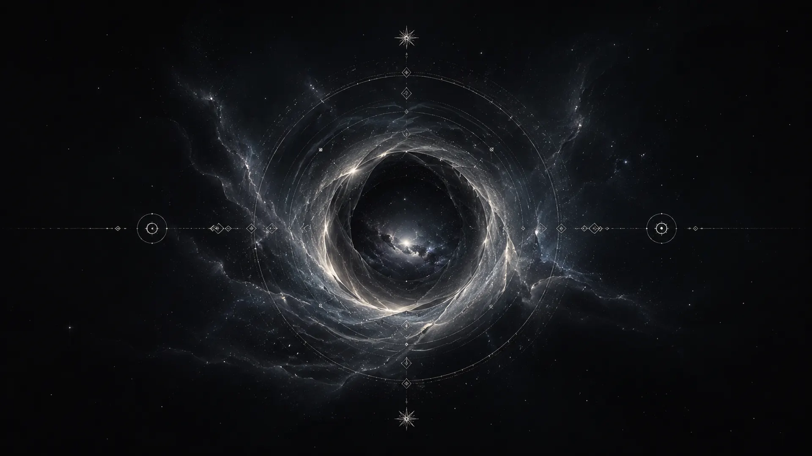

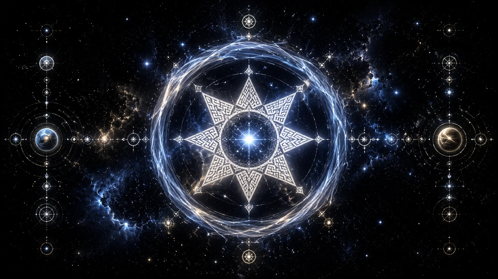
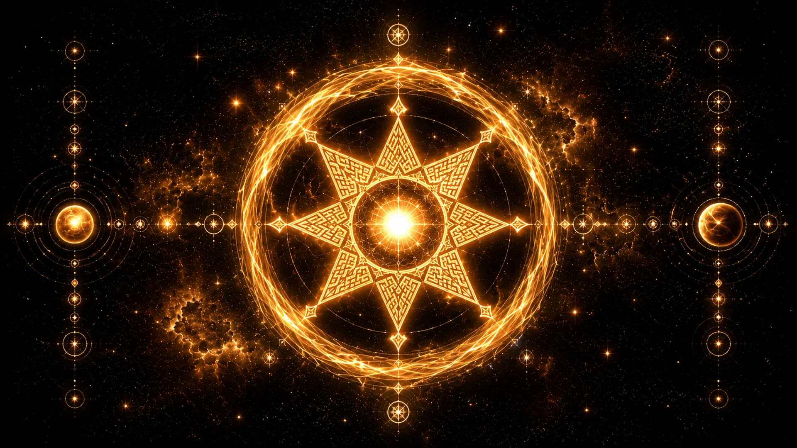
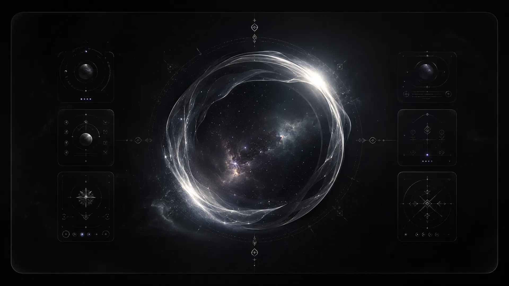
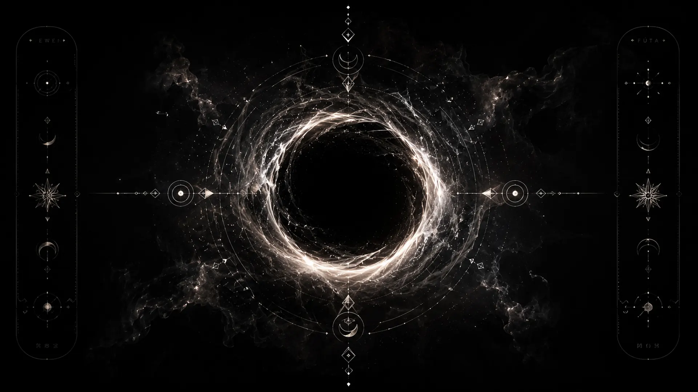
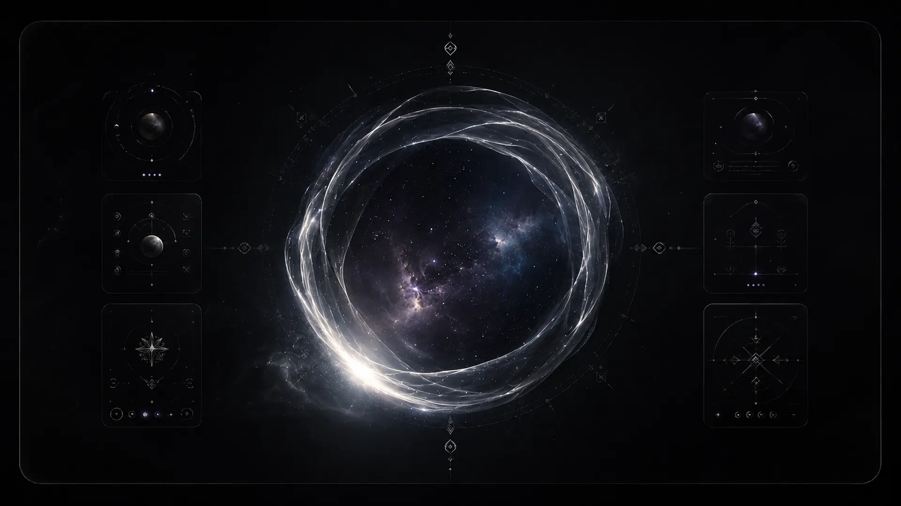
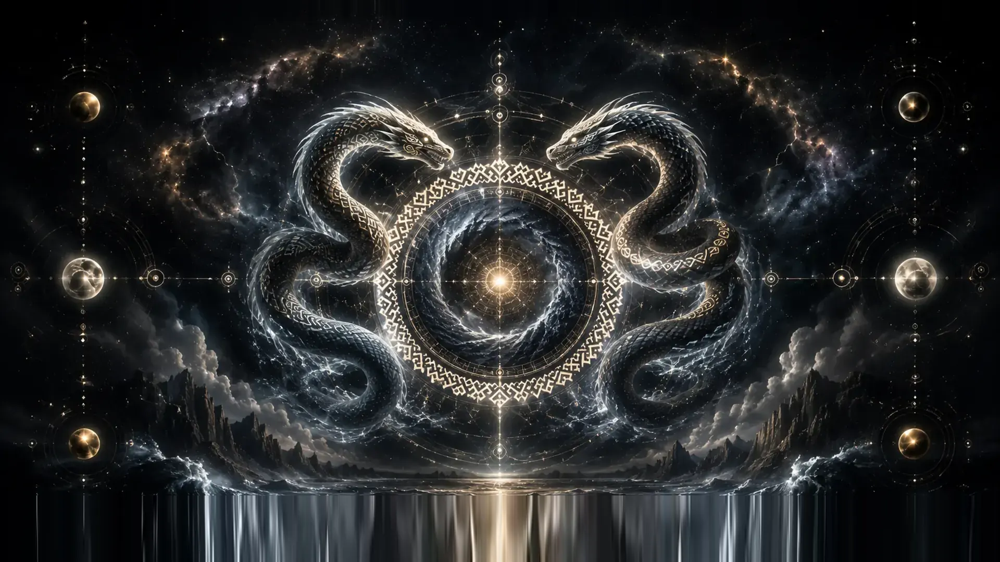
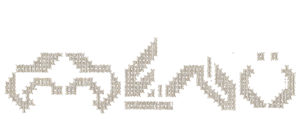
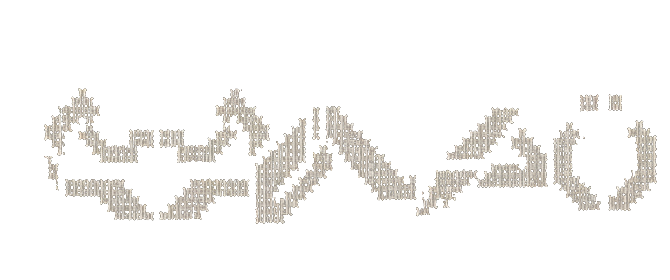
Opening the portal













Every Mapudungun term, translation, and cosmological claim in this portal is drawn from these published works on Mapuche language, religion, and history. No claim here is invented — but no consultant review has been done yet either. Anything you find inaccurate, we will correct.
You have crossed every door of this portal. The Mapuche cosmovision is wider than ten terms — these are only ten of many. Continue learning, listening, and asking.
This experience is a dimensional reading of the Mapuche cosmovision, built as the entry of Wenu Mapu — tribal jewelry connected to the cosmos. It is a calling card, not a sacred site.
Every term is documented in Mapudungun lexicography and Mapuche cosmology studies. Texts were rewritten in May 2026 to strip invented "ancestral wisdom" framing and to keep only what is documented.
Only Lafken corresponds to its Mapuche cardinal position (West). The other nine are documented cosmovisional terms arranged spatially for the interface, not Mapuche cardinals. Traditional cardinals are Puel (E), Pikun (N), Willi (S), Lafken (W).
Before public production launch, the ten portal texts will be reviewed by a Mapuche cultural consultant. If you are Mapuche and see something to correct, write to marimari@wenumapuonline.com — we will listen.
Beyond the ten portals, these are further documented Mapuche sky-words, drawn from Canio & Pozo, Wenumapu: Astronomía y Cosmología Mapuche (OCHOLIBROS, 2015 · ISBN 978-956-335-205-4). Meanings are given as documented — the spatial arrangement of the portal is editorial, but these words are not invented.
Design and brand: Marimari, Wenu Mapu. Original art generated with assistance, curated to fit documented Mapuche aesthetics. Mapuche wordmarks (Wenü, Mapü) drawn in textile-inspired typography.